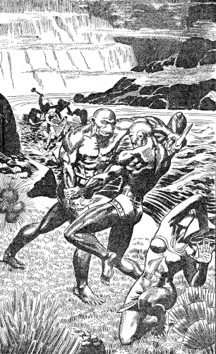
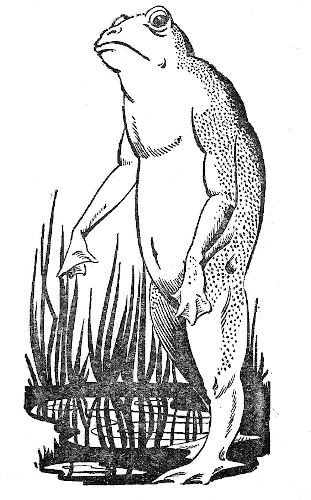

Mindless creatures mewled and grovelled in
the streets of Ohio ... and men found themselves
suddenly in the swampy, alien hell of Venus,
fighting a weird battle for existence.
[Transcriber's Note: This etext was produced from
Planet Stories Spring 1946.
Extensive research did not uncover any evidence that
the U.S. copyright on this publication was renewed.]
The experiment flopped, or perhaps, more accurately speaking, it succeeded only too well.
The theory had been that of plucking the ego from one human domicile and transplanting it, temporarily of course, into the brain of another man—or animal. The machine had been built for the same purpose.
Circuits shorted and the resultant blast of power killed Doctor Brixson and his elderly assistant, Elmer Morgus. And outward the circle of unleashed power extended for a mile from Crayton College.
The egos, wrenched from their rightful places, went hurtling outward into space on the light-speeding wave of the blast and contacted that of life on our sister planet, Venus. And mindless things grovelled and mewled in the streets of Crayton, Ohio....
Only since the Malcolm's successful voyage to Venus, recently, has the full story of that catastrophe been known. From the lips of the rubbery hided, hideous Venusians who came to Earth aboard the spacer we learned the truth.
This, then is the story of those Earthlings flung into that swampy alien hell of a world by the freakish blast of an experimental patchwork of wires, tubes, and odd scraps of quartz. It is the tale of their battle for survival in a sodden unfriendly environment:
Glade Masson, timid, myopic history professor at Crayton College, jerked his head from the dank grayish ooze of the hollow where he lay. His eyes snapped wide as he examined the foggy outlines of bushes and twisting vines surrounding him. Further than the length of two bodies he could not see.
"'Lo," a croaking voice mumbled from close by.
Masson looked up into the blinking round dark eyes of the alien creature. He examined the naked human-shaped animal curiously as he came to his feet.
That the strange being was intelligent he realized at once; the sharp dagger of splintered bone depending from a cross band of mildewed hide told him that. But the noseless, broad-joweled face; the hairless slick grayness of the froglike body, shading to a dark purple around the two eyes and the generous slit of a mouth; the webbed hands and feet, and the drooping pointed ears were anything but human.
"A frog!" he gasped, amazed, "an intelligent batrachian!" He rubbed his hand across his eyes, and arrested the motion.
His hand was webbed and gray! He had six fingers instead of five! And his sleek body was naked save for the crossed belts of ridged hide supporting his own two daggers.
Masson belched. This strange new body of his had dined on fish he discovered, and probably very overripe fish at that. He flexed his thick gray arms, admiring the ripple of sleek hard muscle. Blood was pumping and throbbing through his body with the excitement of the moment. For almost the first time in his forty years of myopic boyhood and timid manhood Glade Masson felt alive.
Luxuriantly the man from Earth stretched. He saw an expression that he took to be amazement cross the strange being's features. The purple deepened around the other male's sunken nostrils.
"I," the frog man said, "am Doctor John Lawler!"
Masson's mouth dropped open. What must have happened back there in Crayton? His last memory was of a horrible wrenching at his delicate stomach, and then an abrupt blacking out of the auditorium. Apparently his ego, and that of Doctor Lawler as well, had by some mysterious means been exchanged with that of these froglike beings.
Suddenly he smiled. This was probably another of his nightmares. He would shut his eyes, pinch himself hard, and command himself to awaken.
He pinched. He heard Lawler screech in terror. Slowly he opened his eyes.
An ugly beast, a reptilian monster of scales and gaping tooth-lined snout, came lumbering toward him on stubby crooked legs. Ten feet in length was the alligator-like saurian, its lumpy black plates sprouting an ugly ridge of yellowish spines along its back down to its broad flat tail.
Masson took to his heels. He bounded away across the springy carpet of water-logged vines after the fading sounds of the Doctor's spurting webbed feet.
Fog closed in around him. Twice he fell into seemingly bottomless pools of water and his alien body surfaced him instinctively and dragged him ashore so he could continue his flight. No longer did he hear the running feet of Doctor Lawler; yet he continued to run.
So it was that he came into a section of the vine-floored mistiness where stubby leafy-boled shrubs grew from the spongy soil, and as he approached closer to the pale-leaved little trees, he heard the excited babble of slurred half-familiar words. He looked more closely at the trees then, to discover that just above his head a thatch of living vines, leaves and grasses topped each pulpy yellowish trunk.
Gray faces, hideous and limp of ear, peered down at him. He had come across a village of the frog people! From the trees of this sunless foggy jungle they had fashioned shelters of a sort.
As his breathing eased he could hear them more plainly. No wonder their speech sounded familiar, he realized, they were speaking English! Lawler and he were not alone then. Probably all of Crayton was here—possibly all of Ohio!
"I tell you," that was Charles Ellis, the chemistry department head, "I'm positive this is not Earth. May sound crazy to you, but I'm sure this is the planet Venus."
Masson nodded his head in agreement, but some of the other men snorted their disgust.
"Impossible," grunted one scarred old frog-man, blinking his one good eye and flapping his ears at a persistent buzzing insect winging around his hairless skull. "I say this must be the Amazon River country—though how we came here I wouldn't know."
"No familiar fauna and flora," Ellis said shrugging. "Nope. I disagree. The only logical choice is Venus or perhaps a similar environment in another dimensional plane." He got to his feet and walked across the rough floor of the large hut toward the descending ladder of lashed poles. "But I'll not argue with you," he concluded. "We must hang together now as never before."
Masson followed his friend down the ladder. As he descended into the misty sea of fog he regarded the changed village that a score of this watery world's days had seen created. The boles of the trees had been utilized as foundation piles for more substantial and water-tight structures, and now the two thousand and twenty-nine exiles from Earth were well-housed.
"This is the reality, Charles," Masson said, his wide sunken nostrils drinking deep of the thick moist air. "Already our life back on Earth seems an unpleasant dream. Here the swamplands furnish us food in plenty and the temperature seldom varies more than a few degrees."
The steady dark eyes of Ellis regarded Masson seriously. Then he lifted the crude spear, bone-tipped and heavy, and touched the curved projection of the bow above his shoulder.
"Three times," he said, "we have been attacked by hostile natives. Only our superior weapons have given us the advantage." He paused. "The next time we may not be so lucky. The frogs may have copied our spears and bows.
"That is the reason we must not be satisfied. We must build machines and better weapons for our own protection. Here on Venus we are but a handful of aliens surrounded by millions of hostile savages."
Masson grunted doubtfully. "With what," he inquired, "are we to build machines? All the islands that we have visited by raft or swimming are like this one—soggy floating atolls of thidin vines and nik-nik brush. The natives have no metal weapons; even flint seems unknown."
Ellis rammed his webbed gray hand down into the pouch that hung at his side. When it emerged again a sharp fragment of black glassy rock lay in his palm. He grinned at Masson's amazement.
"One of the Frogs," he said, "that we captured yesterday had this on a loop of leather around his neck. With the few words we have learned and signs I learned that a mountain of this material lies toward the east."
"Land!" was all Masson could gasp. Reverently he fingered the bit of glassy obsidian. His eyes blinked with excitement and his grotesque slash of a mouth quivered.
"What are we waiting for?" he demanded eagerly. "Let's get going."
Ellis laughed tolerantly. "The island lies some distance away," he said. "We will need good rafts, or, better, canoes. Hostile natives probably live in the mud-lands surrounding the island."
"Let's get to work on it then," urged Glade Masson. "We can kill a lot of these alligator-jawed vallids and use their skins for boat covering. The Eskimos do that. And we can make shields of their hides, too. We'll need extra arrows, food, and other supplies."
"Go to it," laughed Ellis. "Ten or fifteen of the younger men will probably want to go along." He blinked his round black eyes solemnly. "And you're the guy that was satisfied with things as they are."
The little flotilla of skin-covered canoes threaded its way among the misty islets of pale green thidin vines. Ten of the unwieldy craft there were, and in all save the two larger boats two powerfully muscled Frogs sat. The larger boats carried three paddlers and were well-laden with dried vallid flesh, broiled thidin shoots, and heaps of the scarlet-mottled orange nik-nik fruit.
"Hear about Susan Martin?" inquired Ellis as he dipped his paddle rhythmically into the sullen waters of the mist-shrouded sea.
"Nope." Masson's head did not turn. His canoe was leading the expedition. "Heard she was visiting Crayton, but never heard what happened to her."
"Always lecturing about birth control and child psychology," chuckled Ellis. "As uncompromising a spinster as ever I met. Well, that's all changed now. She finds herself with a family of seven young Frogs on her hands."
"Whew!" gasped Masson. "Bet she hates that."
"Oddly enough," the chemistry instructor said, "she's taking to being a mother enthusiastically. Her seven little Frogs will be the neatest, best-scrubbed, insufferable little prigs in all New Crayton—even old Joe Hansel, the ex-town drunkard. He's her next-to-the youngest son."
Masson shook his hairless gray head thoughtfully. The mystery of the switching of his neighbors' and friends' egos with the former inhabitants of these tough gray bodies never ceased to amaze him. The former sex of their transferred intelligences had been preserved, but not their age.
"Something like Cunningham, the campus heart-breaker," he said. "Only he ended up an old, hideously wrinkled Frog."
"And a good end for him," cried Ellis warmly, "he was...."
"Ssst," warned Masson peering along a steaming tunnel of vision that a chance breath of moist air had opened. "A raft, and half a dozen Frogs!"
They relayed the word back to the seven smaller craft and four of them swiftly drew abreast of the canoe of Masson and Ellis. The other three canoes remained to guard the cargo boats with their three paddlers.
"We'll investigate," ordered Masson softly. "Unless they attack, do not harm them. With the few words of their language we have learned perhaps we can find where the rocky island is located."
"Fat chance," growled the huge-shouldered scarred young Frog whose name was Dolan. "They attack and talk later."
"Those are orders," said Masson firmly, his eyes boring into those of the other. "When you elected me leader of this expedition I took full control. Suggestions I will listen to, but you must follow orders!"
Dolan's eyes wavered. "I didn't say nothing," he grunted.
Two canoes slipped silently away to the left and the other two sped toward the right. Masson continued straight ahead toward the raft.
Suddenly the mist parted. The foggy outlines of a half-dozen Frogs were revealed. And across the crudely plaited surface of the raft of buoyant thidin stalks lay the bound body of a young female Frog. Masson had time to see that the female wore a brief skirt and confining band of beaten vegetable fiber—a woman stolen from their own village of New Crayton—before the natives hurled their lumpy cudgels of nik-nik at him.
He ducked. The clubs missed, only one of them thudding into the hide-bound gunwale beside him, and then the frog men had plunged into the familiar medium of the warm sea. They swam swiftly toward the two men in the boat, their bone knives in their powerful webbed fists.
Masson hurled his spear at one of them. A gurgling cry of pain attested to the accuracy of his aim. He saw Ellis' spear leap forward and bury itself in the sea, and then his bow was in his hands and the bowstring swiftly nocking into the bone-tipped shaft of an arrow. But the frog men were upon them.
The other canoes converged then. Arrows frothed the water around the swimming savages. Blood dyed the water with shifting red. And the ghastly coils of glistening snake-like things of the deep, attracted by the blood, fought for the bodies. The water boiled into frenzy as shark-like fish came also and battled with the coiling scavengers of the deep. The canoes rocked and threatened to swamp despite the frantic paddling of the men.
All of the Frogs were dead, but their raft bobbed, unharmed, outward from the seething cauldron of fighting monsters. The bound woman watched with fearful eyes as Masson and Ellis paddled closer, and then she cried out with joy as she saw their weapons and the simple breech clouts.

"Thank God," she gasped, as Masson stepped aboard and freed her bonds. She chafed gently at the swollen flesh where her gray-skinned legs and arms had been bound.
Masson swallowed. Hideous though she might have been by any Earthly standards, to him she was beautiful. Her body was firm and shapely and her eyes were soft and liquid. And in his body there coursed the blood of the Frog People. Already he was forgetting the standards of beauty back on Earth. Grace, strength, and the clean-cut planes of the body are the secret of loveliness.
"I cannot blame them for stealing you," he said, thick-tongued. "I have not seen you before in New Crayton. Who are you?"
"Irene Croft," she said, smiling. "And you, I know, are Glade Masson. I saw you working on these canoes before I was captured."
The ex-instructor of history felt his mouth drop open. This most charming of all females he had seen on Venus was Irene Croft? Croft, the slab-sided, bony woman who had taught languages at Crayton College—the fussy old maid without a saving grace or charm save her intelligence and quick understanding? They had been good friends back there on Earth, but now—well, friendship would not be enough.
"Irene," he said enthusiastically, "you're a—a—honey."
His face turned purple as she smiled her gracious acceptance of his compliment. Words gurgled impotently in his throat as he helped her aboard the canoe.
"Son," said Charles Ellis gruffly, "you've got it bad. And," he scowled at the trim figure sitting between them, "I don't blame you."
This time it was Irene's face and neck that purpled delicately.
"Sorry we can't take you back to New Crayton," said Masson, his grin anything but sorry, "but we must be almost to the rocky island we are hunting."
The girl flashed a quick smile at Masson, a smile that would have given the ordinary Earthman a series of nightmares. "You are right about the island," she said. "I have picked up a fair knowledge of the speech of the Butrads."
"So that's what they call themselves," broke in Ellis. "Sorry, Miss Croft. Go on."
"The island is called Tular," she said. "They were taking me there to give me as a bride to the God-From-the-Clouds, as I translated it, but I feel sure that I was to be sacrificed in some ghastly religious fashion."
"From-Clouds," Ellis was musing. "Probably a meteorite." His face brightened. "A meteorite may mean iron!" he cried.
Masson's paddle dipped steadily into the murky waters of the cast sea that covers all Venus. Floating miniature islets of thidin swirled past, islets that some day might grow to be huge, matted sub-continents of green life. Ghostly islands of thidin, their swampy floors giving root to the stocky trees and shrubs of the Venusian jungle growth, loomed out of the endless blanket of fog. The throaty deep roar of the scaly vallids and the splash of their bodies broke the thick silence.
"And iron means machines, and weapons," he said thoughtfully, without turning around. "Machines—and plows. Weapons—and hoes. We will build factories, but we will also build homes."
Irene's voice cut across their musings. "Supposing the meteor is not iron?" she demanded.
"The sea is full of metal," said Ellis doggedly. "We will take magnesium from it. We did it on Earth. And the island will contain metal—it must."
"Spears!" called Masson unexpectedly, and then, tersely, "vallids just ahead."
The canoes slowed and sheered off from the pulpy underwater shelf of the island Masson had almost rammed. Hundreds of the scaly monsters floated sleepily in the water, their yellow spines and bulging eyes carpeting the shallow depths for several acres. Ashore dozens of others crawled about on their stubby bowed legs searching for the tasty vegetable tidbits that their saurian palates desired.
Luckily none of the vallids saw them, or if they did they were not interested, and they backed water until the eternal low-lying clouds of the wet planet shielded their ungainly craft from view. They commenced paddling cautiously away toward the right only to again encounter the shore of an island swarming with the ugly snouted saurians.
At intervals they attempted to proceed again in the direction they had been heading but always they encountered more vallids and the low-lying shore of an island. An idea was beginning to dawn in Masson's gray-skinned skull. This must be a larger island than any they had before encountered.
"Perhaps," he said, as the other canoes drew abreast, "this is the shore of Tular. There would be swamplands and mud flats if it were. Thidin would grow up about the central mountain."
A slim-faced frog man named Reppart nodded. "Probably you're right," he agreed. "Never saw so many vallids before." He shrugged his shoulders. "But how do we get through them to the land?"
"Should be a river." Ellis was dipping out the water that the ceaseless heavy mist of rain poured into the boat. He gestured with the hollow gourd-shaped husk of a nik-nik fruit. "We follow the river in."
"But we have found no river," sneered Dolan. "What now, General Masson?"
Irene Croft's softer voice cut across their conversation.
"But we have found the river," she said. "See the current pushing out toward us from the island? And the color of the water is different, grayer."
"You're right," cried Masson exultantly. He picked up his paddle and sent the canoe probing forward into the thick murk of the cloudy wall ahead.
Three, or perhaps four miles the men from Earth paddled upstream along a mile-wide channel that carried the steady surge of the river seaward. They came at last to the first waterfall, a low rocky shelf that lifted but five feet above the green floor of swampy thidin vines and the grayish ooze that floored them.
The firmness of rock was welcome underfoot. The slow darkness of the Venusian night was falling and so they made their camp on a level shelf of rock a few hundred feet back from the waterfall's muted roar.
And with morning they pushed onward up the river.
The stream forked a mile above the first waterfall. They chose the larger stream on the right and paddled between low sullen black cliffs of basalt for perhaps another three miles. Here a lake spread outward fanwise from three giant cataracts that boomed and frothed as they poured over a sheer hundred-foot precipice.
"Power," said Masson. "Power enough for a dozen Pittsburghs. Power to light all the cities of Earth."
"This is a large island," Ellis nodded. "Such a volume of water requires an enormous watershed." He smiled confidently. "There will be metal here. This will be the home of our children."
Masson found his hand had unconsciously clasped that of Irene. He pressed the velvety softness of the webbed fingers and the woman's eyes lifted curiously to his own. A steady, intense glow burned far back in their depths. Her lips parted, unsmiling.
"Our children," he whispered softly, and her eyes dropped as purple spread slowly upward from her rounded firm neck.
She pressed his hand timidly; dropped it, and started up the rocky ledge that led from the lake's left-hand shore. And behind her climbed the frog men from the village of New Crayton.
Their canoes they had concealed in the tangled jungle growth. From here their feet would have to serve—their feet and the tough sandals of vallid hide that they now donned for the first time.
The sheer escarpment gave way to a vast level plain of jungle growth and swampy reeds. The jungle was almost impenetrable and so they decided to swim up the river. The eternal clouds of Venus seemed to have thinned as they climbed for now they stood within a grayish dome that extended a hundred feet or more on every hand.
As they approached the river they saw a huge raft of thidin bound about with sturdy vegetable withes and having a score of sturdy poles lashed to its rough surface. But for the increased range of their vision they would have missed the man-made little island.
Masson trimmed the green shoots that were already sprouting from the pole he had chosen. His bone knife broke as he hacked at a tough sprout.
"With our first iron," he said, "I will make an axe. The axe and the machete are the first tools of civilization."
Twice they climbed past mighty waterfalls again. They came, at last, to the fertile central plateau that stretched for three hundred miles away to the north and south and a third of that distance before them.
Four native villages they passed and four times Irene used her meager command of the Butrads' tongue to tell them that they were on pilgrimage to the God-From-The-Clouds, and that she was to be the god's bride. Apparently the ordinary inter-tribal warfare of the Butrads was held in abeyance where the God-From-The-Clouds was concerned.
They crossed park-like country, where beneath the pale-green trees a tough spear-bladed grass grew, and they slept at night in the shelter of broad-leaved trees that roofed over several acres of ground so completely that there were patches of dusty earth.
Masson sent Dillen, Marcy, Reppart, and Dolan back to report to the settlement at New Crayton. He advised that as many families as possible be ferried across the sea to Tular. Here on the upper plateau would be their new world.
The day after the four messengers had left they came to the God-From-The-Clouds.
An ancient crater housed the god, a low-rimmed bowl five miles in diameter. The jungle had crept over the outer walls and far down the inner slopes to the edge of the lake within. The trail they followed ended abruptly at a cliff on whose brink a triangular block of greenish-black basalt rested. There were mounds of rounded white objects, human skulls, about the rough altar, but the broken white skeletons of the sacrifices lay thick about the god far below.
Irene shuddered. She hid her head on Masson's chest. "The brides of their god," she sobbed, "brides of the machine."
The god of the Butrads of Venus was a huge crumpled ball of metal—a space ship from some distant world!
A distant and alien world the battered craft must have come from, for the corridors and cabins were too small for the froglike bodies of the Earthmen to pass. Yet the space ship was gigantic by any standard—a quarter of a mile in diameter. There were strange corroded weapons and machines whose use the Earthmen could not fathom. There was sealed cargo—food that even yet was edible after long years of exposure to the heat and humidity of the Venusian upland.
The ship was a veritable storehouse of precious metals and equipment. Ellis set to work at once designing a dynamo and drew plans for a machine shop to be set up in a nearby cavern. Masson took two of the men and examined the defensive possibilities of the crater's upper rim—he feared the reaction of the Frogs when they learned of this desecration of the God-From-The-Clouds. Irene put two of the men at work clearing out another cave for a kitchen and sleeping rooms, and Gilroy, who had been a farmer, cruised the rich lava-fed flat along the lake's rain-speckled shore.
Busy days and nights passed. They lost all track of time. No word came from New Crayton but they were so busy they paid no heed. The waterfall that fed the crater lake now turned a dynamo, and electricity worked its magic. At the two passes that permitted descent into the crater guards were now posted, armed with crude muskets and grenades, and the signal that was to mark the approach of the party from New Crayton was three spaced shots.
"They are coming at last," cried Irene. The third shot echoed soddenly through the thick air. She tugged at Masson's arm. "We must go to meet them."
Laughing they raced up the trail from the crater's green depths to the high wall where the sentry stood guard. They stood beside him, breathless, for a moment. Then Masson's hand went out impulsively to the shoulder of the man.
"Gilroy, man!" he cried. "What is it?"
The guard's drooping shoulders straightened. Bitterly his webbed hand pointed.
A handful of Butrads, men from New Crayton by their arms and clothing, tramped wearily nearer. Masson counted them—thirty-three men. As he watched one of them dropped suddenly, an arrow in his back. Then for the first time did he see the misty shapes of the pursuers of this exhausted band.
They raced forward, hundreds of them, the naked froglike savages of the lower river villages. Another of the hunted men dropped and Masson jerked the gun from Gilroy's hands and trained it on the horde of charging Butrads.
He fired. The sound of the shot, rather than the bullet, arrested the enemy advance momentarily. From the harried little knot of men a faint cheer lifted and their pace quickened. A moment later Gilroy swung open the thick narrow gate and was helping the first of them through. Masson lobbed a grenade far out toward the island Frogs and they shrank yet farther away.
"Did our best." That was Reppart sobbing out his story. "Three hundred of us ... rest of them decided to live easy back on the island.... Maybe they wasn't too dumb either....
"Anyhow the Frogs hit us at the first waterfall.... Finished off most of the women and children there.... We fought them all along the river ... rest of the women died there.... Eighty of us reached the plateau."
"And thirty of you are left," finished Masson soberly. His round eyes blazed hot. "Fifty of us to conquer a watery jungle world. Fifty men against a planet."
He shook a knotted gray fist at the hostile natives. "There'll be no more contact with New Crayton," he said. "We cannot risk more of our manpower in futile warfare if we are to build a worthy civilization for our children. This crater must be our world for many years."
One of the men laughed bitterly, and then great racking sobs shook his stocky gray body.
"Children!" he cried. "All our children lie out there, unborn. Among us all there is only your woman."
Glade Masson swept his arm out toward the seething mob of the Butrads. "There are your children," he said. "The natives have daughters and sisters. Their blood is that of our own bodies. They will bear us children. We and our children will conquer and rule the water wastes of Venus." He paused for a long moment.
"To survive," he said flatly, "we must fight with all means at our command. We must steal, we must kill, and we must work. If we do not steal the females of the Butrads, Earth's culture and wisdom will shortly vanish. If we do not kill we will be killed."
The round dark eyes of the listening Earthmen brightened with new hope. Croaking sounds of approval issued from their ugly slashes of mouth. And hopeless sloping shoulders straightened.
So it was that they raided the villages of the Frogs again and again. The females of the surrounding uplands proved to be intelligent, and shortly most of them were happy in the safety and comfort of the building town of the Earthmen.
They mated with the men and learned the strange customs and speech of their captors.
But there was trouble looming ahead. As the months passed and the eggs of the females failed to hatch Masson and Ellis realized that their little colony was doomed to extinction.
"The women tell the same story, Glade," said Ellis, his nervous webbed fingers drumming at the table in his tiny office.
Masson looked out through the window at the men moving about their tasks in the factory and further down beside the lake, in the fields. They worked listlessly, hopelessly. What was there to work for now?
"So the old women of the tribes carried the eggs away and hid them?" Masson rubbed the unlovely flesh of his jowls thoughtfully. "They were forbidden to follow. Taboo or something of the sort. And then the old females brought back the young ones?"
"Could be, of course," said Ellis doubtfully, "that they are concealing the truth. Lying to us." He shook his head. "But I doubt it. Most of them are glad to be safe here where raiding tribes and the more vicious saurians cannot reach them. They learn fast, too," he added.
"Nothing to do," Masson said grimly, "but for me to trail the old women. I'll take Dolan. He's never satisfied unless he's prowling the jungles outside the crater."
"I'm going, too," Ellis began, but Masson shook his head.
"Your knowledge of chemistry and metallurgy are needed here," he said. "If I am lost you can carry on, but you are the only living text book available."
And he overrode the other's protests.
Later in the day Masson and Dolan slipped out through the barrier at the crater's rim and made their way toward the nearest Butrad village. They took with them plenty of ammunition and supplies, for they expected to be gone for many days.
"There they go, Glade!" Joe Dolan's scarred face twisted in a hideous parody of a grin.
They lay in the lush oozy bed of rotted growth above the shallow ravine where the Frog village lay. Nik-nik brush and giant broad-leaved grass of mottled yellow and green concealed them from the eyes of the Butrads in the ugly huddle of elevated huts below.
"Ten old females," went on Dolan. "Maybe they can carry twenty eggs apiece in their baskets." He whistled. "That'd be two hundred."
"How," asked Masson, "can you whistle with a mouth like that? I've tried dozens of times."
Dolan chuckled. "It's a gift," he said, and came to his hands and knees.
"Take your time," cautioned Masson. "Just so we keep them in sight."
The ravine narrowed and became a vertical-walled tunnel of thidin vines and scaly gray rock. Masson and Joe Dolan lost sight of the slow-moving party of Frogs at times as they moved along the rim of the deep slot. And as they followed, the floor of the ravine fell further away beneath them; they were climbing high into the stunted cliffs and peaks of Tular's interior.
Night came and they slept above the stopping place of the ten Butrad ancients. And with morning they pushed upward through the soupy fog again.
Abruptly the upward slanting slope ended. They looked out over a roughly oval bowl of slowly writhing mist and cloud.
Dimly they saw the floor of the cavity. Several hundred acres of jungle-clad raggedness. Miniature buttes, mesas, and cliffs split the bowl into a hell of broken terrain, and here and there, near the black pocks of caverns in the rimming cliff walls, there showed little huddles of Butrad huts.
"The Place of Birth," Masson said slowly. "All the tribes of the island must come here."
Dolan nodded and rubbed the palm of his hand over the whetted edge of his hunting knife. "Plenty of guards stationed around the only entrances," he said, "just as you expected. I'll have to kill them off."
Masson shook his head. "That would warn them. I may need weeks to learn the secret of their system of hatching the eggs." His webbed gray hand swept in a short arc.
"Some of those caves must have other entrances. From the rim perhaps. That's what we'll look for."
Dolan shrugged. "Right you are," he agreed.
"My theory is," Masson said, "that Venus was formerly much warmer than it is now. For that reason the incubation temperature must be artificially raised. The question is: how much and how long must the eggs be artificially warmed. And do they use pools of all-but boiling water, or is the heat comparatively dry?"
"That's for you to find out," said Dolan. "Me, I'm nothing but a truck driver. I ain't no college-brain guy."
"You do all right," said Masson, grinning. "You seem to find your way around the jungle easy as a native."
"Huh," snorted Dolan. "Ten years hammering the pavements and dodging traffic does that. You gotta have a quick eye and remember what you're doing."
Masson got to his feet and moved back from the brink.
"Let's start hunting," he suggested.
They crouched together in the dark shadows of the tunnel that opened a dozen feet above the floor of the large cavern. Down there, in the gray half-light that filtered in through the outer entrance, they saw three small heaps of vegetation steaming silently and the two old females who tended them.
From time to time one of the old females filled a hollow husk from the nik-nik fruit with water and sprinkled it over the three mounds. The eggs they had seen the ancient ones bury so carefully were soaking up the moist warmth.
Masson jogged Dolan's elbow, and they crawled carefully back along the low-roofed passage toward the vine-festooned entrance five hundred feet above. Water and gray ooze sloshed underfoot as they walked along level reaches of the way, and always the wet rock was slippery.
"We know how the eggs are hatched now," he said, "and with experience we can learn to gauge the proper temperature. But until we have perfected the procedure our families will not increase very rapidly."
Dolan gulped. "I dunno if I want one of them ugly looking things we saw in that side pen," he said.
"They're no uglier than you are, Joe," chuckled Masson. "Hunt up a pool of clear water and look at yourself sometime." He gripped Dolan's arm.
"But that's what I was thinking about," he went on. "About that side pen in the cave where the newly hatched Butrads are kept. We kidnaped the Frogs' women, so...."
"Why not their kids?" Dolan laughed. "We seem to be going in for crime in a big way."
"The young ones will have a better chance for living to adulthood," argued Masson. "We're doing them a favor. And the Frogs can't know whose children are gone and whose are left."
"Sounds all right the way you put it," agreed Dolan. "Maybe because I want to believe it. But will the little brats have brains enough to soak up education?"
"I'm sure of it, Joe. All they need is opportunity."
"So I'm to go back and get ten or twelve other guys," said Dolan, "and we'll clean out this Frog nursery."
"Right. I'll stay here and watch the whole procedure. Don't hurry back. Maybe a week or so will be better."
"Okay, Glade," said the scarred giant, moving at a crouch along the low-roofed way. "Be seeing you."
A turn in the ascending tunnel smothered the last low-spoken words, and Masson was left alone.
The blind men came into the cavern at the direction of the wrinkled old hags. They carefully stripped away layer upon layer of vegetation from the smallest and brownest mound.
Masson leaned further out over the rim of the hole above the cavern floor to watch. He had feared that the party of men from the crater would arrive before he could see the uncovering of a mound and the hatching of the Frog eggs.
The last layer of thidin and grass came away and perhaps a hundred of the leathery bluish ovoids lay revealed on their steaming warm nest. They were shapeless and limply alive now, that leather-hard outer shell rendered soft and rotten by the steady warmth of the heating vegetation. Masson saw two tiny monsters already free from their outgrown prisons as the blind men began scooping them up and carrying them to the empty pen beside the ones already occupied.
The young Butrads set up a throaty, hoarse bellowing that made the cave vibrate. It was not their feeding time but the excitement had aroused them and they knew but this one way to express their displeasure. Masson started to crawl back from the passage's outer lip even as the two old females started throwing thidin shoots and scraps of raw fish to the screeching young ones.
And the rotten gray rock betrayed him. A dozen times in the past eight days he had leaned out over the rim to watch, and a dozen times the rock had supported his weight. But this time it went scaling away, a great slab of it, and with it went the Earthman.
The blind men whirled from the half-full pen and came lunging at him. The old females screeched throaty harsh orders. And Masson raised the gun that he somehow had managed to cling to.
"Go back," he ordered in the language of the Butrads, "go out of the cave before I kill."
"He is but one," croaked the ancient ones, "destroy the desecrator of the Place of Birth."
Now Masson could see that the eyes of the four Frog males had been neatly gouged from their sockets in days past. Probably they were blinded that they might not see the forbidden magic of the eggs that became Frogs. Or perhaps they were blinded that they might not escape from the birth caves into the outer jungles.
Yet in the semi-gloom of the cave they were not at too great a disadvantage. They listened for the movement of Masson's body, and the breath of his lungs guided them. The young of the Butrads were silent, too. The sudden quiet was a roar in his ears.
They closed in, great chunks of stone clenched in their fists. A Frog with but a club or a crude spear would have been beaten. But the puny hollow tube of metal that the Earthman carried held the strength of many heavy clubs and many huge rocks in its miniature pebbles of shaped copper.
Masson fired and a Frog went down. The other three came on uncertainly, and he fired again. The two remaining Butrads stopped.
"There are many of them, Old Ones," one of them cried. "They have struck down Trew and Brun with thunder."
"There is only one!" cried the wrinkled old females. "Kill him! Strike him down!"
"Do not listen to the Old Ones," Masson warned. "I have captured the thunder. With it I strike you down."
The blind men hesitated, and Masson sent a bullet smoking between their legs. They backed away toward the entrance, the females with them. And a moment later Masson was piling fragments of rock and crumbling shale into a barricade before the cavern's mouth.
He could hold them off for a time he knew, until night at least, even though they brought the guards from the outer entrances to the bowl to aid the blind men.
Again and again the guards had attacked the cave where Masson lay holed up. All that day they had come crawling through the dense matted growth to launch their arrows and spears at him. Fifty or sixty of them there had been, he estimated, and at least forty blood-hungry Butrads still faced him. These were the outer guards.
With the coming of night the blinded workers of the caves would join them, and with their uncanny sense of hearing and touch they would overrun the cave. The Frogs were not a cowardly race, and his invasion into this, their most taboo and sacred place, made them all the more fanatical in their hatred.
Masson had until night. After that, unless he escaped back through the tunnel, he would die. And if he left the young Frogs behind he would never again be able to raid this cavern. Already they were hungry, their throaty shrilled cries beating at his droop-tipped ears.
Perhaps the din from within dulled his hearing. For tough naked hide scraped on rock and the heavy breathing of the wounded blind man should have been clearly audible otherwise. Masson must have heard him approaching at the last for he was half-turned when the rough fragment of grayish shale came thudding down. He twisted away from the weighty missile, but even so it grazed along his skull and he went down into the blackness of nothingness for a time.
He awakened to look into the hot dark eyes of a Frog who had crept to within a few paces of his barricade.
The rifle was yet in his grip and through blinding flashes of pain he somehow found the strength to aim and squeeze trigger. The ugly gray face vanished and he painfully fed another cartridge into the rifle's single chamber. The weight across his back did not go away, and twisting his head he saw that the blind Butrad's body had slumped across his own.
Masson slid the weight off but the blackness came again; so he rested for a time. And this time the blackness had come to stay for it was night. The sun had finally been swallowed by the cloud layers that swath Venus eternally.
He tried to crawl back toward the tunnel, but how he was to climb the sheer wall to the escape passage he did not know. He could not raise his body from the ground on the level.
Once again the pain in his head returned and pain flashed its lightning. His eyes clenched themselves shut and he fought off the giddy waves of weakness. After a time he could feel again, and see.
There was light in the cave, light and the grayish flabby-hided bodies of Butrads. He tried to raise the rifle and a webbed hand knocked it from his grasp.
"None of that, now," a voice ordered, and his unbelieving ears recognized that of Joe Dolan.
Rifles cracked at the cave entrance and he saw the larger young ones of the Butrads being hoisted up to the escape tunnel. And he grinned weakly up at Dolan's hideous scarred face.
The future of the Earthmen on the Watery World was safe now.
